<section class="seccion">
<article class="card">

<h2>BOXEO</h2>

<!-- INICIO -->
<h3>Inicio</h3>
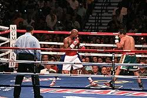
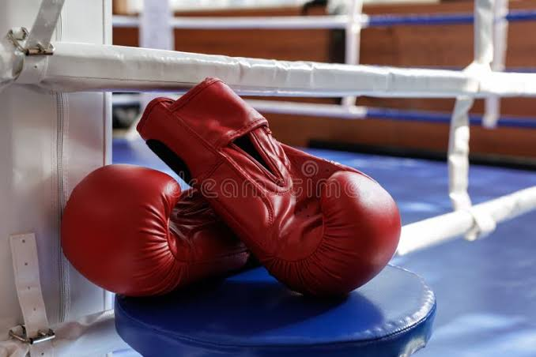

<p>
El boxeo es un deporte de combate que combina fuerza, velocidad, resistencia y estrategia.
Es practicado en todo el mundo tanto a nivel amateur como profesional.
</p>

<p>
Además de ser un deporte físico, también desarrolla habilidades mentales como disciplina,
control emocional y concentración.
</p>

<!-- QUE ES -->
<h3>¿Qué es el boxeo?</h3>
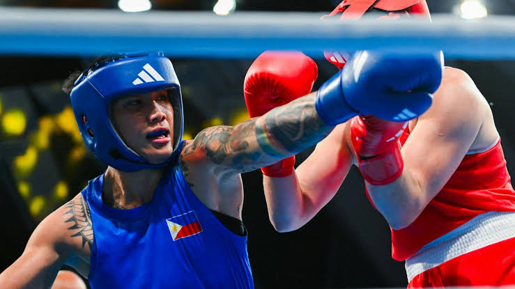
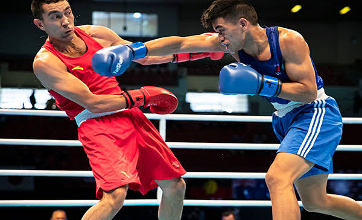

<p>
El boxeo es un deporte de contacto donde dos oponentes se enfrentan utilizando golpes con los puños dentro de un ring.
</p>

<p>
Se divide en rounds y se puede ganar por puntos o por nocaut.
</p>

<p>
Existen reglas para proteger a los boxeadores, como el uso de guantes y supervisión arbitral.
</p>

<!-- CARACTERISTICAS -->
<h3>Características</h3>
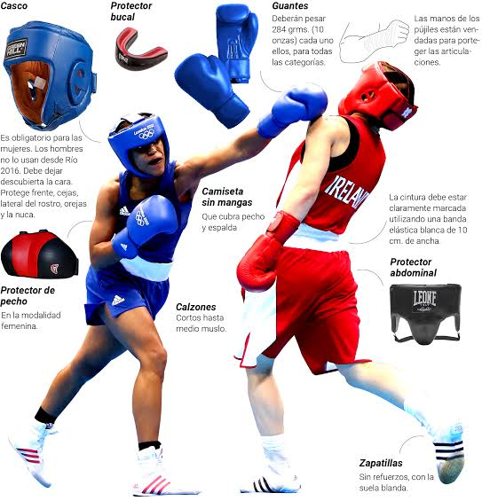
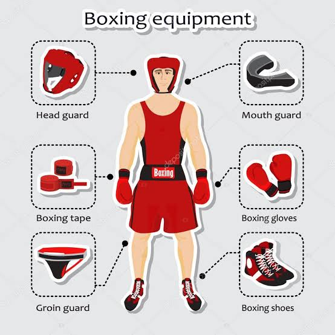

<ul>
<li>Gran resistencia física</li>
<li>Velocidad y reflejos</li>
<li>Estrategia en combate</li>
<li>Disciplina constante</li>
<li>Entrenamiento exigente</li>
</ul>

<p>
El boxeo requiere una preparación completa, tanto física como mental.
</p>

<p>
Los golpes más utilizados son el jab, el gancho y el uppercut.
</p>

<!-- EJEMPLOS -->
<h3>Ejemplos de boxeadores</h3>
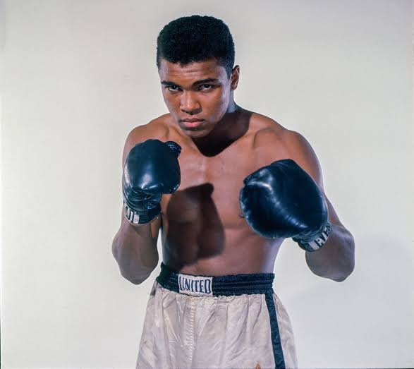
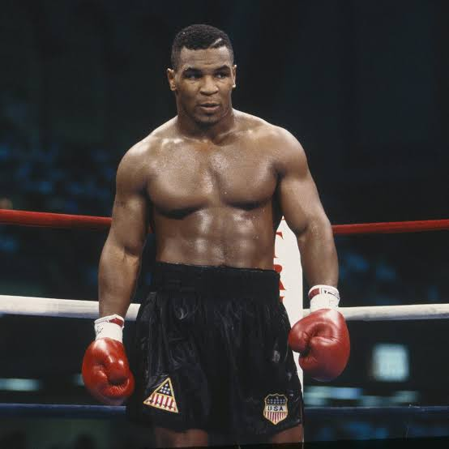
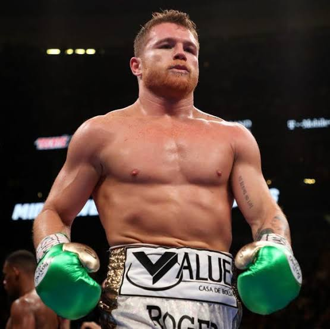

<p>
A lo largo de la historia han existido grandes boxeadores:
</p>

<ul>
<li>Muhammad Ali - velocidad y técnica</li>
<li>Mike Tyson - potencia</li>
<li>Canelo Álvarez - precisión</li>
</ul>

<p>
Cada uno ha dejado una gran huella en el mundo del boxeo.
</p>

<!-- GALERIA -->
<h3>Galería</h3>
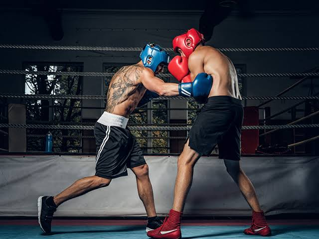
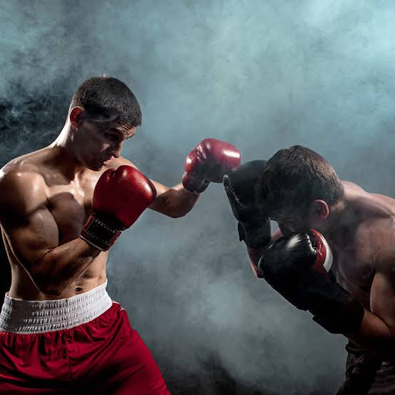
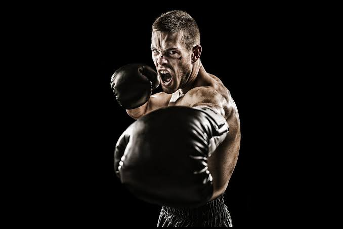
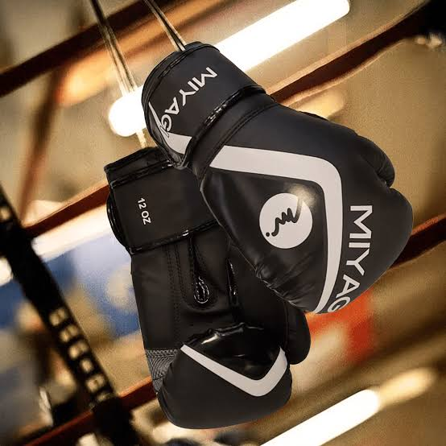

<p>
El boxeo es un deporte lleno de intensidad y emoción.
Cada combate representa una batalla de habilidades físicas y mentales.
</p>

<!-- OPINION -->
<h3>Opinión</h3>

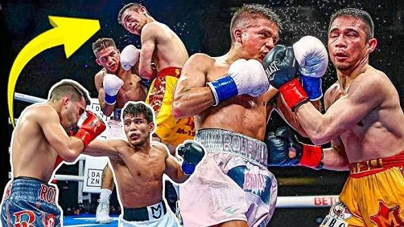

<p>
El boxeo es mucho más que un deporte, es una disciplina que forma carácter.
</p>

<p>
En mi opinión, enseña valores como el respeto, la perseverancia y el autocontrol.
</p>

<p>
También es una excelente forma de mantenerse en forma y liberar estrés.
</p>

</article>
    </section>
